SHADA The First And The Best
Hi baby im writing thie letter to aplogize to you look i love you so much Shada ever since you came into my life my life has changed and everything in me has become beutiful now you left me my life has started to go backwards you were my path my hope my everythig i dont know where you went or what i did to get this far but beleive me i love you with all my heart and i never want you to leave i know what we went through was difficult but its over why did we end everythig for him? iam here iam always want you and i will continue to love you from now until my death iam not writntig to you to just comeback iam writing to you so that you know how much i love you and that my my intentions are sincer with you is it responable that we go away like this for three years? our journey still long this is the biggest dump we had and there might be a bigger one but if we dont know how to deal with this one how would we deal with the bigger one? we have loved each other we are having fun we are playing we are studying we are joking and if we lose each other far from the evil we will not lost like a lovers for me i will have lost a mother a sister a lover a partner in good and bad situation a bestfriend remember how we were and how we lived and how our things were both beutiful remember how much we loved each other and beleived in each other remember all our sweet moments together look at the whole world how it waited for us to leave lets be stronger lets be for the relationship not against it lets be the same sweet couple that we were together let me be your refuge and you be my refuge lets be enough together until the whole world witnesses our loved i wont take much longer than this but i want to tell you one last thing : i miss you so much and i miss everything about you from your nagging to your stubbornness to your grumpiness to your anger i miss every second i spent with you i miss the notification "good morning" from my melegim i miss everything Shada i dont know if you feel the same way or not but i will keep telling you that :
I Love You
Our best pictures
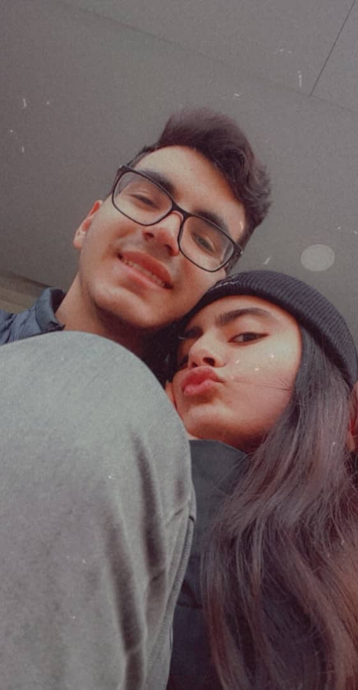 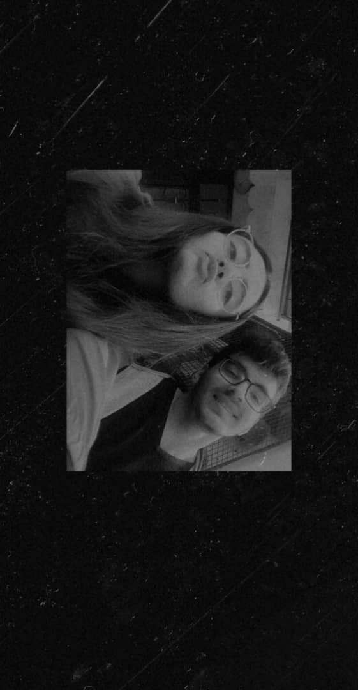 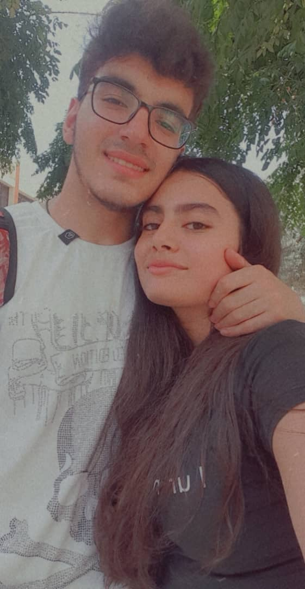 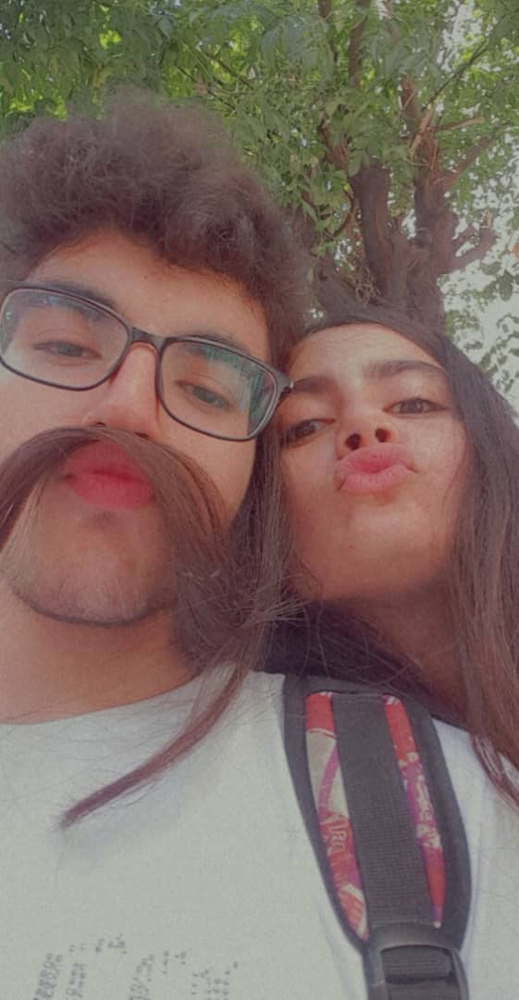 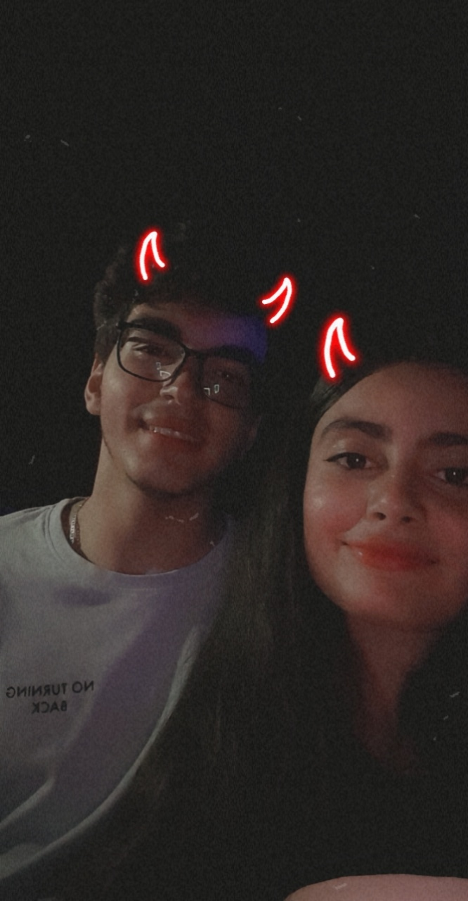

 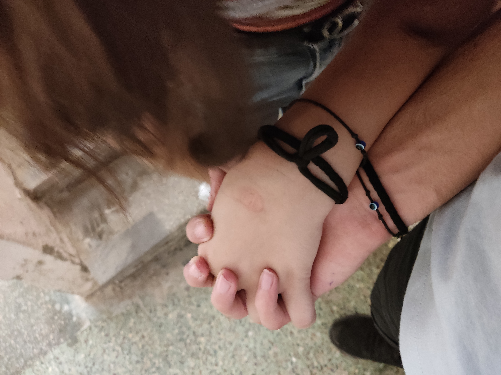
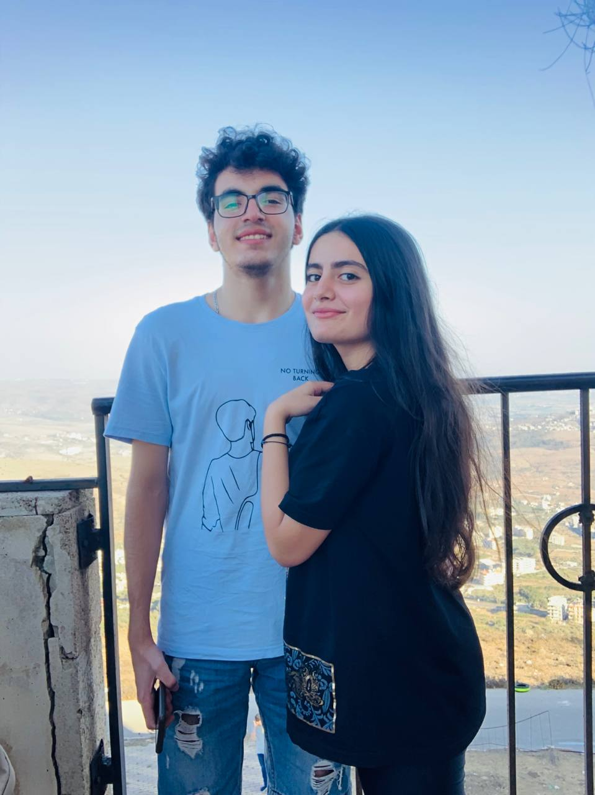
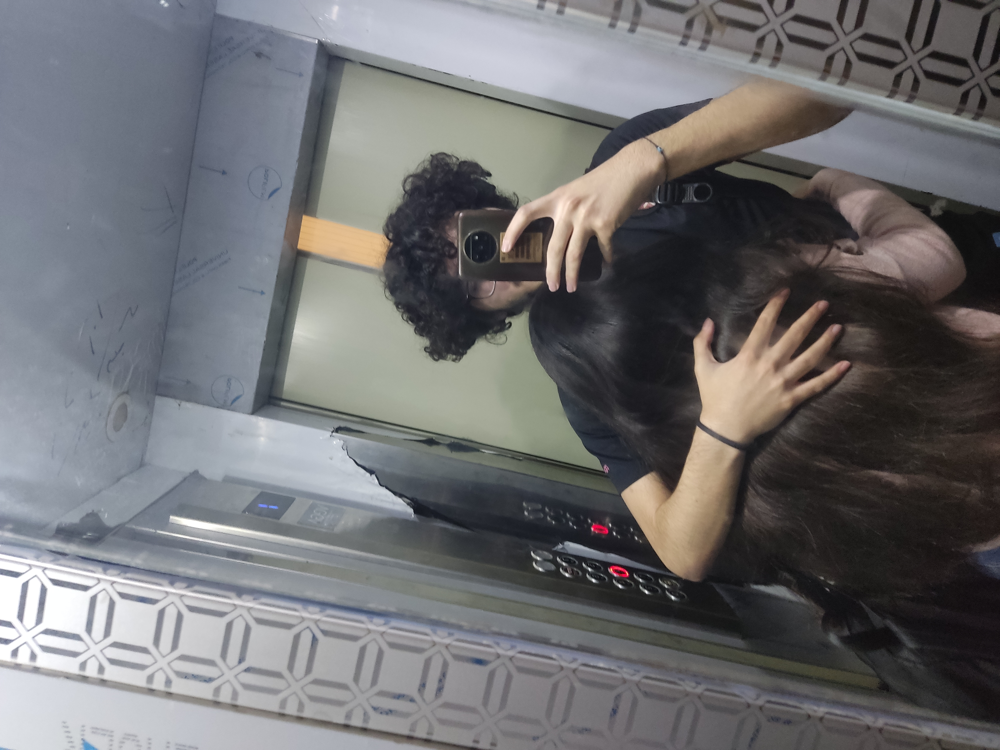
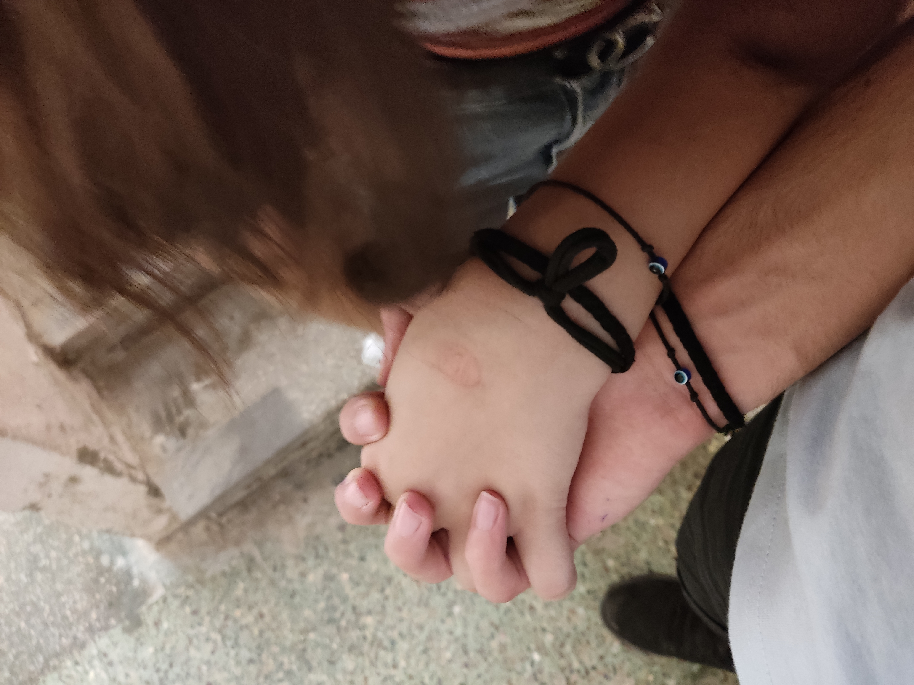
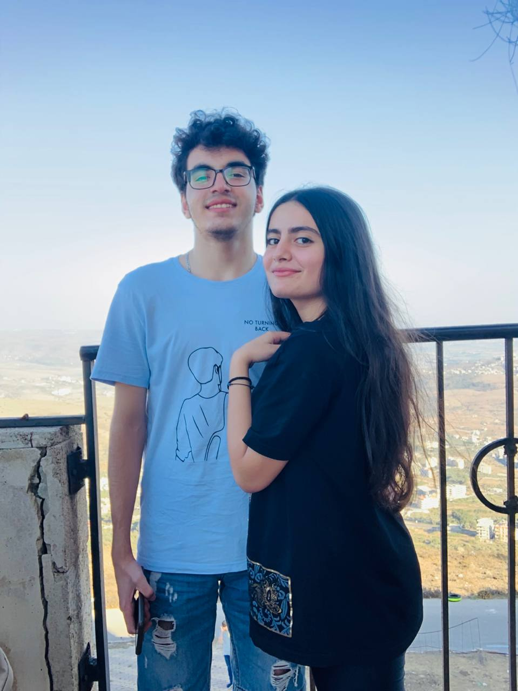
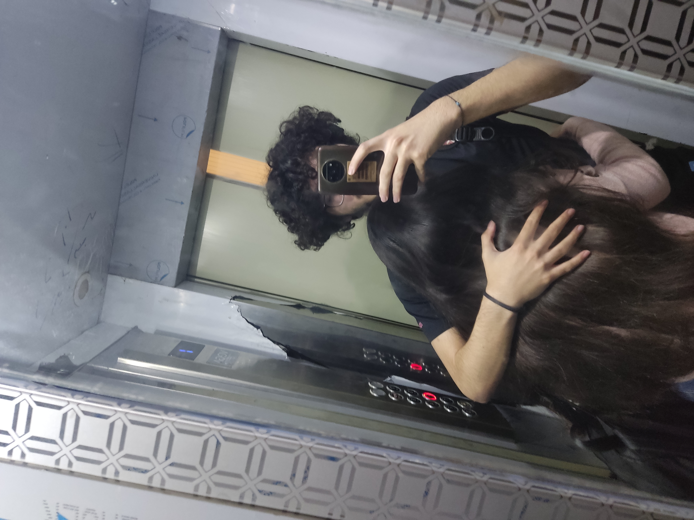


This for you
31/7/2025 Created by © Zain.I Shada